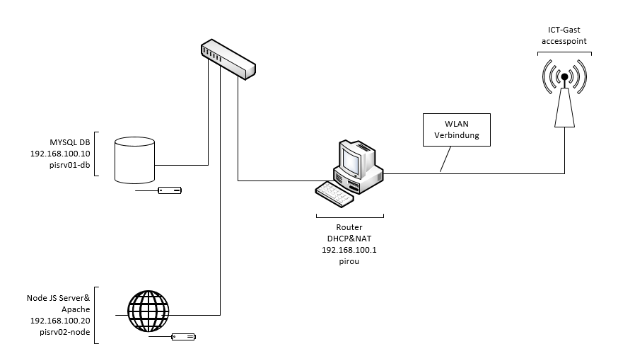

Webserver mit drei Rasperry Pis
Kurzinfo
Themenbereich
Webserver
Lernende/r
Lino Thalmann
Lehrbetrieb
Komax AG
Betreuer
Urs Nussbaumer, Horst Lang, Stephan Küng
Projekt-Website
Aufgabenstellung
Ein Partnerteam entwickelt eine Webapplikation, die auf Node.js basiert. Jedoch sind die Angebote für Node.js Server teuer oder man kann sie nur für einen Monat gratis Nutzen. Darum stelle ich ihnen einen Node.js Webserver zur Verfügung. Dieser allein reicht aber nicht für die Applikation. Einen Datenbankserver (MySQL) und ein Apache für die HTML Dateien werden auch noch benötigt. Diese Server müssen für ihre Zusammenarbeit korrekt vernetzt sein.
Ergebnisse
Der Server ist voll einsatzbereit und die komplette Webapplikation kann darauf laufen.
Lösungskonzept
Im Netzwerk sind drei Raspberry Pis, die unterschiedliche Aufgaben erfüllen. Ein Pi ist der Master und fungiert als DHCP und Router, auf dem zweiten läuft der Node.js Server und ein Apache für das HTML und auf dem dritten befindet sich der MySQL Server. Nun kann man die Webseite anschauen, indem man sich mit diesem Netzwerk verbindet. Das Verbinden funktioniert zurzeit aber nur per LAN-Kabel. 
Aufgetretene Probleme
Ich verschwendete viel Zeit mit meiner ersten Version, die aus vier Pis besteht hätte und ein Node.js Cluster gewesen wäre. Bei diesem System muss der Entwickler das Cluster programmieren. Das ist äusserst umständlich und in meinem Fall brauche ich nicht die addierte Leistung von vier Pis nur für den Node.js Server. Also machte ich mich auf die Suche nach einem anderen System, was mich dann schliesslich auf meine endgültige Lösung gebracht hat. Durch diesen Zeitverlust konnte ich aber weniger Zeit in Zusätze wie coole Status-LEDs oder ein Bildschirm aufwenden.
Ausblick
Nun könnte ich noch die Webseite öffentlich zugänglich machen. Dazu bräuchte ich aber eine private IP. Mein Router ist zusätzlich noch mit dem ICT-Gast Gateway verbunden, was ein Zugang von aussen komplett verhindert. Das alles müsste noch geändert werden, wenn ich weitermachen würde.